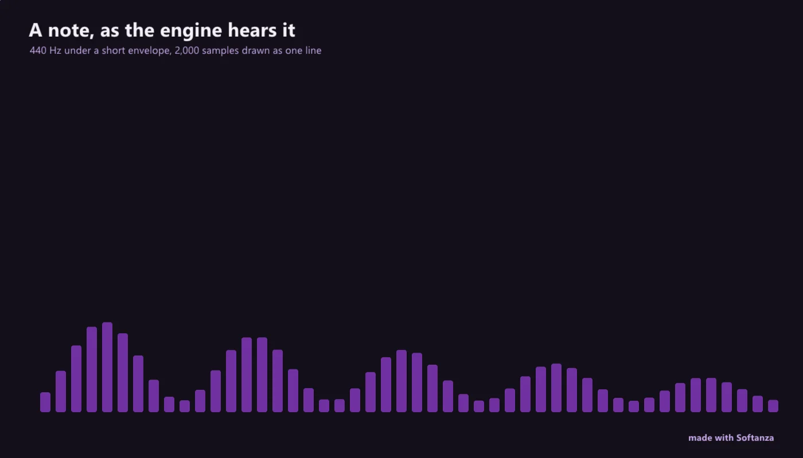

Sound
Fully shipped: a lock-free callback, an owned graph, librosa-grade analysis, sonification.
5 Strong · 5 Solid · 1 Partial · 1 Emerging
Measured against: miniaudio · Web Audio · JUCE · Folders: base/sound · The guide to this area's functions

Rethought from first principles
What Softanza kept from what works, and what it rethought, as the library wrote it down in its design documents and narrations.
The Softanza wayA sound is described, not hand-built: you declare a graph or a meaning, the engine renders it, and a listener is the last judge.
Kept from the best practice
- Device input and output and file decoding come from miniaudio: one public-domain file, no dependencies, all three operating systems, playback and capture. Only the missing half is borrowed. source
- The real-time rule of audio is kept strictly: the device callback never allocates memory, never locks and never calls the platform's language; it reads prepared buffers only. source
- Music keeps Euterpea's score algebra: notes and rests joined in sequence or together, repeated and transposed. A score is data that can be analysed before it is heard. source
Rethought
- One sound graph renders to the speaker or to a file through the same path, so what you hear and what you export can never drift apart. source
- An author fires a meaning such as 'danger' and gets a sound. Since an alert that can be talked over is no alert, lesser sounds are turned down or dropped. source
- A cultural universe is declared as data: tuning, movement rules, rhythmic cycle, ornaments and instruments, so one phrase can render in maqam, raga or gamelan. source
- The ear is the last gate: speech playing at double speed passed every counter and was caught by a listener. Each phase records who listened. source
The survey's biggest surprise: memory said 'plan, SN0 next', the code says one of the most fully-realized planes in the library, SN0-SN6 and a sonification series shipped and closed. miniaudio is vendored and split into two DLLs, there is an owned Zig sound graph (Web-Audio-shaped), FFT-backed analysis, and a real lock-free real-time callback that does no allocation, no lock, and never re-enters the Haro VM. What it refuses on purpose: MIDI, spatial/HRTF, plugin hosting, notation; and reverb is absent even from the effect palette.
What a maker does with it, and what stands out
- A lock-free real-time callback: no alloc, no lock, no Haro re-entry, guarded down to worst-callback microseconds
- An owned Zig sound graph, Web-Audio-shaped, not a wrapper
- librosa-grade analysis: spectrogram, onsets, tempo and LUFS on the shared engine FFT
- A sonification / earcon / voice layer no mainstream audio library offers
What is owed
- Reverb and a fuller effect palette (compressor, chorus, distortion)
- Richer synthesis (wavetable, FM, additive, granular)
- MP3 / OGG encode to close the read-broad / write-narrow asymmetry
- MIDI input, spatial/HRTF and plugin hosting (deliberate non-goals)
The Softanza way, run
What Softanza does differently in this area, shown by code taken from its narrations and guards, and run for this page.
While a danger alert sounds, a success cue and a warning are dropped; once it ends cues pass again, and a warning never silences danger.
oP = new stzEarcons()
oP.RecordFireAt("Danger.Alert", 10.0)
Chk("a cue under a sounding alert is DROPPED", NOT oP.WouldFireAt(:Success, 10.05))
Chk("and so is a warning -- rank, not recency", NOT oP.WouldFireAt(:Warning, 10.05))
Chk("once the alert is over, a cue passes again", oP.WouldFireAt(:Success, 12.0))
oP2 = new stzEarcons()
oP2.RecordFireAt("Warning.Alert", 10.0)
Chk("a warning alert does NOT pre-empt danger", oP2.WouldFireAt(:Danger, 10.05))[ok] a cue under a sounding alert is DROPPED [ok] and so is a warning -- rank, not recency [ok] once the alert is over, a cue passes again [ok] a warning alert does NOT pre-empt danger
run on 2026-10-01 21:18 inside the library at commit 0e72e2e2c; taken from base/test/sound/sound_semantics_narrated.ring
In the Rast maqam the seventh degree is played half-flat going up and flat coming down, because the universe declares movement, not only pitch.
oRst = StzSoundUniverseQ(:maqam).Mode(:rast)
oRst.PerformQ("5 6 7 8 7 6 5", 1)
aN = oRst.PlayedNotes()
? " Rast, 5 6 7 8 7 6 5: the seventh up " + aN[3][3] + ", down " + aN[5][3]
Chk("Rast ascends through the half-flat seventh (1050) and descends through the flat (1000)",
aN[3][3] = 1050 and aN[5][3] = 1000)Rast, 5 6 7 8 7 6 5: the seventh up 1050, down 1000 [ok] Rast ascends through the half-flat seventh (1050) and descends through the flat (1000)
run on 2026-10-01 21:18 inside the library at commit 0e72e2e2c; taken from base/test/sound/sound_mu4_narrated.ring
A Hausa greeting becomes a drum phrase that follows the language's low and high tones, the way a talking drum does.
oNig = StzSoundUniverseQ(:niger)
oKal = oNig.SentenceQ("sannu da zuwa")
aK = oNig.PlayedNotes()
cTones = ""
for k in aK cTones += k[3] + " " next
? " sannu da zuwa ('welcome'): " + trim(cTones) + " -- Newman's tones, low-high-low-high-low"
Chk("the declared contour is L H L H L", trim(cTones) = "L H L H L") sannu da zuwa ('welcome'): L H L H L -- Newman's tones, low-high-low-high-low
[ok] the declared contour is L H L H Lrun on 2026-10-01 21:18 inside the library at commit 0e72e2e2c; taken from base/test/sound/sound_mu4_narrated.ring
The lanes, one by one
Lanes and their notes are quoted as they were read at the source, on Read from the source on 2026-09-16, from a read-only main worktree -- base/sound; engine sound.zig, soundgraph.zig, soundanalysis.zig, audiodev.zig, sounddsp.zig, soundring.zig, soundwasm.zig + vendored miniaudio 0.11.25; guards under test/sound (31 files + a web-audio harness).